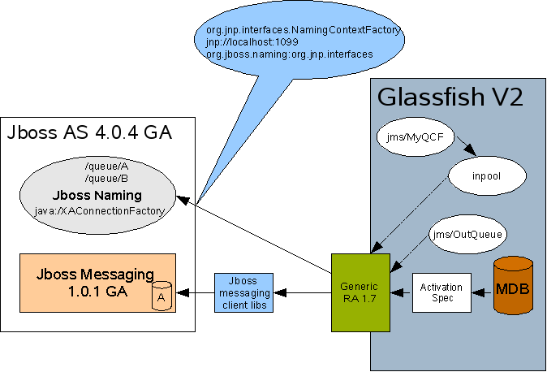

Integrating JBoss Messaging (1.0.1) with
Glassfish V2 (Build 26) using Generic JMS RA (1.7)
By
Ramesh Parthasarathy
Generic JMS RA (1.7) that is bundled with Glassfish V2 enables
applications deployed on Glassfish to use almost any JMS 1.1 compliant
message broker. This article talks about how applications (typically
Message Driven Beans) deployed in glassfish can use JBoss Messaging as
the JMS provider using
Generic resource adapter for JMS.
The steps/configuration mentioned below are based on the following
versions :
Project Glassfish V2 Build 26
https://glassfish.dev.java.net/downloads/v2-b26.html
JBoss Messaging 1.0.1 GA (over JBoss AS 4.0.4 GA).
http://labs.jboss.com/file-access/default/members/jbossmessaging/downloads/jboss-messaging-1.0.1.GA.zip
JBoss AS 4.0.4 GA:
http://sourceforge.net/project/showfiles.php?group_id=22866&package_id=16942&release_id=416591
Generic JMS RA 1.7
(Bundled with glassfish, under
GLASSFISH_HOME/lib/addons/resourceadapters/genericjmsra/genericra.rar)
OR
https://genericjmsra.dev.java.net/files/documents/3308/43334/genericra.rar
Initial
Setup
- Creating Standalone JBoss Messaging instance :
The following
document describes how to setup a standalone JBoss messaging
system.
http://wiki.jboss.org/wiki/Wiki.jsp?page=JBossMessagingUser_Creating_Standalone_Installation
As mentioned in the above
document a Jboss AS 4.0.4 instance is required by JBoss Messaging to
start successfully. Once the above setup is done, you would have a
JBoss AS 4.0.4 installation, lets call it JBOSS_HOME and also a new
server configuration created under JBOSS_HOME/server called
"standalone-messaging".
Note : The default HTTP
port used by the "standalone-messaging" configuration also happens to
be 8080, which would conflict with your Glassfish V2 default HTTP port.
Either modify your
GLASSFISH_HOME/domains/<domain>/config/domain.xml to choose
another port for your glassfish instance or refer JBoss documentation
for how to choose a different HTTP port for the Jboss web
container.
For the purpose of this
document Jboss AS is installed under JBOSS_HOME, Glassfish V2 is
installed under GLASSFISH_HOME.
- Modify the Glassfish domain's classpath to add JBoss jars
located in JBoss AS installation lib directory. The asadmin GUI could
be used to
modify a domain's classpath. Open a browser and type the url of the
application server admin GUI - https://hostname:adminport. Go to
Configuration -> server-config -> JVM Settings -> Path
Settings . Add
an
entry for the jar files shown below in
the classpath suffix. Restart the application server domain for these
changes to take
effect.
JBOSS_HOME/server/standalone-messaging/lib/jboss-messaging.jar
JBOSS_HOME/server/standalone-messaging/lib/jnpserver.jar
JBOSS_HOME/lib/jboss-common.jar
JBOSS_HOME/server/standalone-messaging/lib/jboss-aop.jar
JBOSS_HOME/server/standalone-messaging/lib/jboss-remoting.jar
JBOSS_HOME/server/standalone-messaging/lib/javaassist.jar
JBOSS_HOME/lib/concurrent.jar
JBOSS_HOME/server/standalone-messaging/lib/trove.jar
JBOSS_HOME/server/standalone-messaging/lib/jboss-serialization.jar
JBOSS_HOME/server/standalone-messaging/lib/log4j.jar
- Edit the server.policy file in the
[GLASSFISH_HOME/domains/domain1/config/] directory using your
favourite text editor and add the following line to the default grant
block.
permission java.util.logging.LoggingPermission "control";
permission
java.util.PropertyPermission "*",
"read,write";
Should you use an application client in your application,
edit
the application client's client.policy file in the
[GLASSFISH_HOME/lib/appclient/client.policy] directory and
add the following line to it.
permission javax.security.auth.PrivateCredentialPermission
"javax.resource.spi.security.PasswordCredential * \"*\"","read";
Configuring JBoss
Messaging

Figure 1 : Configuring Jboss
Messaging
The Jboss naming service is used to
store the Message queue administered object such a queues and
connection factories. There are a few administered objects bound by
default when jboss AS starts up, like /queue/A, /queue/B,
java:/XAConnectionFactory, /XAConnectionFactory.....
The sample described in this document uses the default queues and
connection factories available in Jboss naming service. Configuring
generic ra to use other object store (file system , ldap...) to store
Jboss messaging administered objects is out of scope of this document.
After completing the steps mentioned in the "Initial Setup"
section, start the Jboss AS (which starts the jboss messaging service).
JBOSS_HOME/bin/run.sh -c standalone-messaging
Make sure that the server starts up successfully without any error
messages.
Configuring
the Resource Adapter
- Add ${appserver-install-dir}/bin to your PATH. The asadmin
CLI
command can be found at ${appserver-install-dir}/bin. In glassfish a
resource adapter configuration is used to specify the configuration of
a resource adapter. Use the following command to create a resource
adapter configuration for genericra, to configure it to work with Jboss
Messaging 1.0.1.
asadmin
create-resource-adapter-config --user <adminname>
--password
<admin password> --property
SupportsXA=true:ProviderIntegrationMode=jndi:UserName=guest:Password=guest:RMPolicy=OnePerPhysicalConnection:
JndiProperties=java.naming.packaging.url.pkgs\=org.jboss.naming\:org.jnp.interfaces,
java.naming.factory.initial\=org.jnp.interfaces.NamingContextFactory,
java.naming.provider.url\=jnp\:\/\/<hostname>\:1099:LogLevel=FINEST
genericra
A brief description of the
various properties used in the above command is explained below:
SupportsXA
Set the supports distributed transactions attribute to true. The level
of transactional support the adapter provides -- none, local, or XA --
depends on the capabilities of the Enterprise Information System [EIS]
being adapted. If an adapter supports XA transactions and this
attribute is XA, the application can use distributed transactions to
coordinate the EIS resource with JDBC and JMS resources.
ProviderIntegrationMode
Set the integration mode as JNDI. Two integration modes exist in the
Generic Resource Adapter for JMS. The JNDI mode allows the resource
adapter to use the administered objects published in the message
provider's JNDI provider to integrate with the message provider.
Username and Password
Message provider specific user credentials. [In this case, modify this
attribute to reflect the Jboss AS username/password]
JndiProperties
This property [comma-separated list of name-value pairs] specifies JNDI
provider properties to be used for
connecting to the JMS provider's JNDI. In our case, we set it to the
JNDI configuration specified earlier.
RMPolicy
Some XAResource implementations such as IBM MQ Series, relies
on a
Resource Manager per Physical Connection and this causes issues when
there is inbound
and
outbound communication to the same queue manager in a single
transaction (For example, an MDB sends a response to a
destination). When RMPolicy is set to OnePerPhysicalConnection, the
XAResource
wrapper implementation's isSameRM in Generic JMS RA would check if both
the XAResources use the same physical connection, before delegating to
the wrapped objects. Ensure that this attribute is set to
"OnePerPhysicalConnection" if the application uses XA.
Deploying
the Resource adapter
- Download the Generic RA bits from the project
site. With Glassfish V2, Generic
RA is available out-of-the-box with the application server and you
could choose to use the bundle resource adapter as well in the step
below.
- Deploy the resource adapter using the asadmin deploy
command, as shown below. In the image above, see Generic JMS
RA deployed in the application server.
$ asadmin deploy --user admin --password
adminadmin
<location of the generic resource adapter rar file>
Creating
Connection Factories and Administered Objects in Glassfish.
In order to configure a JMS Connection Factory, using the Generic
Resource Adapter for JMS, a Connector connection pool and resource
needs to be created in the application server, as shown below. In the
image above, see inpool [pointing to Generic JMS RA and QCF]
and jms/MyQCF [for inpool] created in the application server.
Connector
connection pool creation
#Creates a Connection Pool called mypool and points to
/XAConnectionFactory
asadmin create-connector-connection-pool -- raname genericra
connectiondefinition javax.jms.QueueConnectionFactory
--transactionsupport XATransaction --property
ConnectionFactoryJndiName=/XAConnectionFactory inpool
Connector
resource creation
#Creates a connector resource named jms/MyQCF and
binds this resource to JNDI for applications to use.
asadmin create-connector-resource --poolname inpool jms/MyQCF
Admin
Objects
For JMS Destination Resources, an administered object needs to be
created. In the image above, see jms/MyQueue [pointing to Generic JMS
RA and TQueue] created in the application server.
#Creates a javax.jms.Queue Administered Object and binds it to
application server's JNDI tree at
jms/MyQueue and points to /queue/B
asadmin create-admin-object --raname genericra --restype
javax.jms.Queue --property DestinationJndiName=/queue/B jms/OutQueue
Component
Deployment descriptors
The deployment descriptors need to take into account the resource
adapter and the connection resources that have been created. A sample
sun-ejb-jar.xml for a Message Driven Bean that listens to a destination
called /queue/A in Jboss Messaging, and publishes back reply messages
to a
destination resource named jms/OutQueue (/queue/B) is shown below.
<?xml version="1.0" encoding="UTF-8"?>
<!DOCTYPE sun-ejb-jar PUBLIC "-//Sun Microsystems, Inc.//DTD
Application Server 8.1 EJB 2.1//EN"
"http://www.sun.com/software/appserver/dtds/sun-ejb-jar_2_1-1.dtd">
<sun-ejb-jar>
<enterprise-beans>
<ejb>
<ejb-name>MyBean</ejb-name>
<jndi-name>sunMDB</jndi-name>
<resource-ref>
<res-ref-name>jms/MyQueueConnectionFactory</res-ref-name>
<jndi-name>jms/MyQCF</jndi-name>
</resource-ref>
<resource-env-ref>
<resource-env-ref-name>jms/OutQueue</resource-env-ref-name>
<jndi-name>jms/OutQueue</jndi-name>
</resource-env-ref>
<bean-pool>
<steady-pool-size>10</steady-pool-size>
<resize-quantity>2</resize-quantity>
<max-pool-size>30</max-pool-size>
<pool-idle-timeout-in-seconds>60</pool-idle-timeout-in-seconds>
</bean-pool>
<mdb-resource-adapter>
<resource-adapter-mid>genericra</resource-adapter-mid>
<activation-config>
<activation-config-property>
<activation-config-property-name>DestinationType</activation-config-property-name>
<activation-config-property-value>javax.jms.Queue</activation-config-property-value>
</activation-config-property>
<activation-config-property>
<activation-config-property-name>MaxPoolSize</activation-config-property-name>
<activation-config-property-value>30</activation-config-property-value>
</activation-config-property>
<activation-config-property>
<activation-config-property-name>RedeliveryAttempts</activation-config-property-name>
<activation-config-property-value>3</activation-config-property-value>
</activation-config-property>
<activation-config-property>
<activation-config-property-name>RedeliveryInterval</activation-config-property-name>
<activation-config-property-value>1</activation-config-property-value>
</activation-config-property>
<activation-config-property>
<activation-config-property-name>ReconnectAttempts</activation-config-property-name>
<activation-config-property-value>1000</activation-config-property-value>
</activation-config-property>
<activation-config-property>
<activation-config-property-name>ReconnectInterval</activation-config-property-name>
<activation-config-property-value>1</activation-config-property-value>
</activation-config-property>
<activation-config-property>
<activation-config-property-name>DestinationJndiName</activation-config-property-name>
<activation-config-property-value>/queue/A</activation-config-property-value>
</activation-config-property>
<activation-config-property>
<activation-config-property-name>ConnectionFactoryJndiName</activation-config-property-name>
<activation-config-property-value>java:/XAConnectionFactory</activation-config-property-value>
</activation-config-property>
</activation-config>
</mdb-resource-adapter>
</ejb>
</enterprise-beans>
</sun-ejb-jar>
The business logic encoded in Message Driven Bean could then lookup the
configured QueueConnectionFactory/Destination resource
to create a connection as shown below.
Context context = null;
ConnectionFactory connectionFactory = null;
logger.info("In PublisherBean.ejbCreate()");
try {
context = new InitialContext();
queue = (javax.jms.Queue) context.lookup
("java:comp/env/jms/OutQueue");
connectionFactory = (ConnectionFactory)
context.lookup("java:comp/env/jms/MyQueueConnectionFactory");
connection =
connectionFactory.createConnection();
QueueSession qss =
connection.createQueueSession(false, Session.AUTO_ACKNOWLEDGE);
QueueSender sender = qss.createSender(queue);
TextMessage msg = qss.createTextMessage();
msg.setText(txtmsg.getText());
sender.send(msg);
connection.close();
} catch (Throwable t) {
logger.severe("PublisherBean.ejbCreate:"
+ "Exception: " +
t.toString());
}
Simple Client
Following is a simple standalone client which sends message to /queue/A
and receives from /queue/B. This application serves as our tester for
the MDB.
public static void main(String[] args) {
Hashtable props = new
Hashtable();
props.put(Context.INITIAL_CONTEXT_FACTORY,
"org.jnp.interfaces.NamingContextFactory");
props.put(Context.PROVIDER_URL, "jnp://localhost:1099");
props.put(Context.URL_PKG_PREFIXES,
"org.jboss.naming:org.jnp.interfaces");
try {
InitialContext ctx = new InitialContext(props);
System.out.println("Ctx " + ctx.toString());
QueueConnectionFactory fac =
(QueueConnectionFactory)ctx.lookup("java:/XAConnectionFactory");
System.out.println("Got conection");
Queue q = (Queue)ctx.lookup("/queue/A");
System.out.println("Got Q");
QueueConnection con = fac.createQueueConnection("guest","guest");
System.out.println("Got Con");
javax.jms.QueueSession session = con.createQueueSession(true,
Session.AUTO_ACKNOWLEDGE);
System.out.println("Got Session");
QueueSender sender = session.createSender(q);
con.start();
System.out.println("Got Sender");
System.out.println("Created msg");
for(int i = 0; i < 2; i++){
Message message = session.createTextMessage(""+i);
sender.send(message);
System.out.println("Sent msg " + i);
session.commit();
}
Queue q1 = (Queue)ctx.lookup("/queue/B");
javax.jms.QueueSession session1 = con.createQueueSession(true,
Session.AUTO_ACKNOWLEDGE);
QueueReceiver rcv = session1.createReceiver(q1);
int
count = 0;
for
(int i = 0; i < 2; i++){
Message msg = rcv.receive(500);
if (msg != null) {
System.out.println("Message received " + ((TextMessage)msg).getText());
count++;
}
}
System.out.println("Total message received " + count);
session1.commit();
session1.close();
session.close();
con.close();
System.exit(1);
} catch (NamingException ex)
{
ex.printStackTrace();
} catch (Exception e) {
e.printStackTrace();
}
Known issues :
The exception shown below might be encountered in the server.log
(domains/<domain>/logs/server.log), this is because jboss
messaging does not support setting a null message listener on the
session.
javax.jms.IllegalStateException: Cannot set a null
MessageListener on the session
at
org.jboss.jms.client.container.AsfAspect.handleSetMessageListener(AsfAspect.java:90)
at
sun.reflect.GeneratedMethodAccessor101.invoke(Unknown Source)
at
sun.reflect.DelegatingMethodAccessorImpl.invoke(DelegatingMethodAccessorImpl.java:25)
Resources
- Generic Resource Adapter for JMS community page -
download/documentation
- Generic Resource
Adapter for JMS user guide
- Project GlassFish
- Jboss Messaging
- JBoss Application Server
- For additional
information on the 'RMPolicy' resource
adapter configuration attribute refer issue#5 in the Generic RA issue
tracker page. For documentation on usage of this attribute refer the
Generic Resource Adapter for JMS user guide.